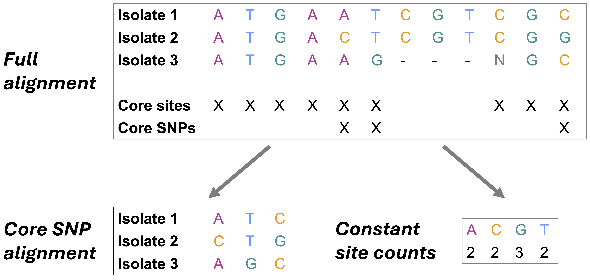
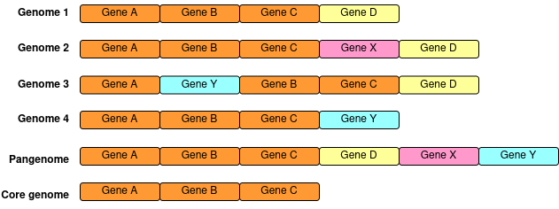
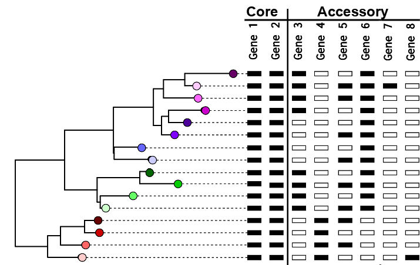
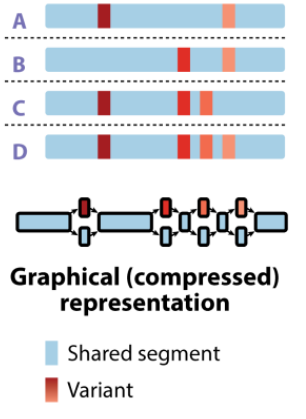

Module 6
Introduction to pangenomes and phylogenies
Phylogenetics
Phylogenetics is the study of evolutionary relationships among biological entities (e.g., species, genes). A phylogeny is a hypothesis explaining potential relationships between different organisms based on the data provided, which in our case will be DNA sequences.

nodes: points at the ends of branches which represent sequences or hypothetical sequences at various points in evolutionary history (includes tips and internal nodes, including the root)
tips (taxa, leaves, external nodes): the individuals (e.g., bacterial isolates) that we sampled and used to construct our phylogeny, which occur on single terminal branches
internal nodes: occur at the points where more than one branch meet and represent the (usually inferred) ancestral sequences
root: the most recent common ancestor of all taxa in a tree (note that most methods of phylogenetic reconstruction do not estimate the position of the root; as such, they produce “unrooted trees”)
- The tree can be rooted at the MRCA (Most Recent Common Ancestor), the midpoint or with an outgroup
- MRCA : For time-scaled trees where the branches represent the passage of time (root –> tip), the root will be the most recent common ancestor of all the sequences in the tree
- Midpoint rooting : Midpoint rooting assumes that all sequences in your dataset are evolving at the same rate. However, this assumption is not true for most biological datasets. You can use this method if you all your samples have been collected from the same place at the same time, or if you would simply like to visualize a tree using a rooted layout without making evolutionary inferences.
- Outgroup rooting : An outgroup is the most distant member in your dataset that is still related to all your samples. For example, if you are making a species tree (a tree with genomes representing all the diversity of one species), you can include a genome of a different but closely related species. (Staphylococcus argenteus as the outgroup for Staphylococcus aureus trees)
- The tree can be rooted at the MRCA (Most Recent Common Ancestor), the midpoint or with an outgroup

- branches: show the path of transmission of genetic information from one generation to the next. Branch lengths indicate genetic change (the longer the branch, the more genetic change/divergence has occurred). Typically, the extent of genetic change is measured by estimating the average number of nucleotide or protein substitutions per site.

- topology: the branching structure of a tree, which indicates patterns of relatedness among taxa (trees with the same topology and root have the same biological interpretation)

- bootstrapping: within phylogenetics, an approach to estimate confidence in a phylogeny’s topology
Why do we care about phylogenies?
Phylogenies help us understand how genes, organisms, and genomes evolve. In the public health arena, phylogenies are one of the most important tools we have to help us understand how pathogens evolve (e.g., where they came from, how they spread, how they are transmitted between hosts, if they are responsible for outbreaks, illnesses, or infections). These insights are critical for informing public health policy.
Core SNP distances and average nucleotide identity (ANI)-based distances that we saw in previous modules only explain genomic distance and not necessarily evolutionary distance, though they are related. Phylogenies can provide us with evolutionary relationships about our sampled genomes which the genomic-distance based metrics alone cannot. For example, during the coronavirus disease 2019 (COVID-19) pandemic, phylogenomic methods have been critical for understanding the transmission, epidemiology and spatial dispersal of severe acute respiratory syndrome coronavirus 2 (SARS-CoV-2).
Phylogeny constructions is one of the key goals of pathogen surveillance work and the steps we went through in the previous lessons (Read QC, Genome assembly, alignment, variant calling) were all steps leading up to this goal. A phylogeny provides significant interpretable biological insight into our samples.

Tree/Phylogeny construction methods and considerations
There are multiple different methods to construct trees or phylogenies based on the data you have. Typically, they involve starting with a nucleotide or amino acid sequence alignment. However, trees can also be constructed with discrete traits or distance values. Discussing all possible methods is outside the scope of this workshop but you can check out this review if you are interested in learning more.
Distance-based versus character-based tree reonstruction
For distance-based methods, the pairwise distances between all sequences are calculated, and the distance matrix which results is used to build a tree. An example of this is neighbor joining, which uses a clustering algorithm to yield a tree. We used Mashtree in a previous module to construct a distance-based tree using Mash distances.
A phylogeny must, by definiton, explain evolutionary relationships. Distance based methods do not use evolutionary information (i.e information regarding nucleotide/aminoacid changes), they simply use a computed distance value between two samples.
For character-based methods (i.e., maximum parsimony, maximum likelihood, and Bayesian methods), each site (i.e., character in an alignment) is used to calculate a score for each tree:
- For maximum parsimony, this score is the minimum number of changes. (Not used often these days due to limitations)
- For maximum likelihood, this score is the log-likelihood value.
- For Bayesian methods, this score is the posterior probability.
Which phylogeny construction method do we choose?
For typical public-health bacterial work with genome sequencing data:
- Use distance-based methods if:
- You just want to get an overall idea of the data we’re working with.
- This method can also work if you have a very large number of samples (several thousand genomes) and want to get a quick sense of the big picture.
- This is the fastest method
- Example tool: Mashtree
- Use maximum likelihood (ML) if:
- You are interested in a specific lineage (for eg: specific sequence type) and want to explore the within-lineage evolutionary relationships (An alignment of recombination-free core SNPs is required).
- This is adequate for the vast majority of public health applications.
- ML trees can be made for a multi-lineage dataset as well if appropriate an alignment is constructed (eg: concatenated core gene alignment)
- Much more computationally expensive than distance-based methods but gives you an actual phylogeny, not just a tree.
- Example tool: IQ-TREE.
- Use Bayesian methods if:
- You want to construct a time-scaled phylogeny and you have longitudionally sampled isolates (i.e sampled over time), with rich temporal information and good temporal resolution (knowing the time point for every sample and also having relatively even sampling over the specific window of time).
- Bayesian models can also aid in estimating geographic spread, population size and population growth rates.
- Bayesian phylogenomic methods are even more time-consuming than ML and require significant additional expertise (check out Taming the BEAST, for tutorials).
- example tool: BEAST2
Substitution models
A substitution model is simply an expectation of how likely it is for one nucleotide (or amino-acid) to change to another. For example:
- JC69 model: Assumes any nucleotide is equally likely to change to any other nucleotide and the frequencies for each base are equal.
- K80 model: Assumes different rates for transitions (Purine to purine change or pyrimidine to pyrimidine change) and transversions (Purine to pyrimidine change or vice versa)
- GTR model: assumes different substitution rates for each pair of nucleotides, as well as unequal base frequencies (If you dont know which one to use, use this one)
There are many more! You can look at a list of other substitution models here.
EXERCISE: Construct a Maximum Likelihood phylogeny
We will be using our alignment of recombination-free core SNPs (clean.core.fasta) to construct a ML phylogeny with IQTREE.
Ascertainment bias correction
- Every single site in our alignment is a SNP and there are no constant sites (i.e., sites in our alignment, where all genomes have the same nucleotide).
- This means our alignment is significantly shorter than the actual core genome size as we are only using the SNPs.
- We must tell our tree-making program that we are only using the SNP sites and provide the number of constant-sites we have “masked” (i.e removed from the alignment). This is so that the program doesn’t think the alignment we are providing is indeed the full alignment.
- If we don’t do this, the branch lengths of our tree will not be correct, and the topology of parts of the tree with short branches will potentially be affected.
This is is called an ascertainment bias correction. Specifically, we will tell IQ-TREE how many constant (invariant) sites there are in our genomic alignment, so that it can scale the branches of our tree accordingly. We can do this using SNP-sites, the tool we already used to get only the sites with SNPs.

Use SNP-sites to calculate the number of constant sites (A, C, G, and T) in our clean genomic alignment,
clean_core.full.aln:snp-sites -C clean_core.full.aln > fconst.csvsnp-sites: Call SNP-sites-C: Flag to output only counts of constant sites in our alignment (A, C, G, and T)clean_core.full.aln: Provide the path to our input multi-FASTA alignment (i.e., our full, clean genomic alignment produced viaSnippy)> fconst.csv: Write the output ofsnp-sitesto a file namedfconst.csv
snp-sitesoutputs a comma-separated file, where each field corresponds to the number of constant sites with (from left to right) A, C, G, and T in our full genomic alignment.
Construct a maximum likelihood (ML) phylogeny using IQ-TREE
Let’s use IQ-TREE to construct a ML phylogeny, using our recombination-free core SNP alignment as input. IQ-TREE has a LOT of options. Check out the IQ-TREE documentation if you want more details.
Use IQ-TREE to construct a ML phylogeny
iqtree -s gubbins_clean_core.aln -m MFP -B 1000 -T 1 -fconst $(cat fconst.csv)iqtree: Call IQ-TREEgubbins_clean_core.aln: Provide the path to our input multi-FASTA alignment (i.e., our final, recombination-free core SNP alignment; )-m MFP: Telliqtreeto find the best-fitting nucleotide substitution model for our data using ModelFinder; once the best model is found,iqtreewill use that model to build our ML phylogeny-B 1000: Telliqtreeto perform 1,000 replicates of the ultrafast bootstrap approximation; this will allow us to see how confidentiqtreeis in our phylogeny’s topology.-T 1: Number of threads/CPUs to use-fconst $(cat fconst.csv): Using an ascertainment bias correction to correct our phylogeny’s branch lengths (because our alignment contains core SNPs only). You can also directly supply the number of constant sites likefconst "XXXX,XXXX,XXXX,XXXX" based on the contents offconst.csv`.
IQ-TREE produces several output files, take a look at them! The final tree is the file with the extension .treefile.
Pangenomics
What is a pangenome?
The same bacterial species would experience different selective pressures depending on the environment. For eg: The gene products essential for survival in the soil would be different from the gene products essential for survival on the human skin. The environmental conditions, neighbouring bacteria and random genetic drift can all contribute to variation within a species. Therefore the same species of bacteria isolated from different environments can have slightly different genome compositions.
In this case, if you were to collect all possible genes found for a given species by sampling multiple diverse members of that species, the total number of genes would be much greater than the number of genes in one genome for that species. Bacterial genomes have a slight deletion bias, and in general the genome size for a given species remains (approximately) constant even though the actual genes that are present or absent can vary.
A pangenome is the collection of all genes/alleles found within a population

Pangenomes can help identify associations between genes and pathogenesis, environments, and/or hosts. They also allow us to study the introduction and turn-over rates of genes within a population.
A given gene can be core - present in all or most members of the population, or accessory - present in only some members of the population
Why build pangenomes?
The more diverse your population is, the smaller your core genome gets, as the diversity increases, the proportion of the genome that is constant (i.e the “core”) decreases. For analysis of a large number of diverse genomes performing a conventional core-genome alignment to a single reference sequence lead to losing informative portions of the genome for several samples as they may not share certain regions with the reference. Using a pangenome reference solves this problem, as here the reference sequence will contain all possible genes that are present in your population (not just the genes present in a single reference)

Pangenome estimation
Gene presence/absence pangenome:
Pangenome tools accept genome annotations in .gff format as input, cluster the annotated sequences at different thresholds into gene families, and then calculate the presence/absence of gene families across the population. There are several pangenome pipelines currently available (PanX, PIRATE, Panaroo, Roary and more) and they all work similarly. The different tools usually differ in exactly how the annotations are clustered into gene families.

Pangenome graphs:
A pangenome graph comprises entire sequence regions (not just coding sequences/genes) and represents an alignment of multiple regions. The graph models the orientation of these sequence regions with potential alternate paths (sometimes called ‘bubbles’) to display variation. The pangenome graph is a more complex datastructure than binary gene presence/absence matrices, however they preserve gene synteny information as well as intergenic variation. Sequence based pangenome graphs can be constructed using tools like Minigraph-cactus and PanGenome Graph Builder (PGGB).

EXERCISE: Build a pangenome
Panaroo requires .gff files for all genomes in your dataset to run. We created these .gff files in the previous genome annotation exercise using Prokka. For convenience, lets copy all the .gff files alone into a separate directory.
# Create a directory for panaroo
mkdir panaroo
# Create a folder for only the gff files inside the panaroo directory
mkdir panaroo/gffs
# Copy all the prokka gffs to the panaroo gffs folder
cp ./prokka/*.gff3 ./panaroo/gffs/Next, run panaroo
panaroo -i ./panaroo/gffs/* --clean-mode strict --core_threshold 0.95 --remove-invalid-genes -f 0.5 -t 20 -o ./panaroo/panaroo_results -a coreCommand explanation:
panaroo: Call panaroo-i ./panaroo/gffs/*: Path to all gff files--clean-mode strict: Panaroo has a correction mode for filtering out potential contaminant genes. Strict will only keep ‘contaminant’ genes present in > 5% of the total population.--core_threshold 0.95: Genes present in 95% of the population or more are considered core-–remove-invalid-genes: Removes genes with premature stop codons-f 0.5: Identity threshold for clustering genes into families, 0.5 to 0.7 is typically used.-t 20: Number of threads to use, 20 in this case-o ./panaroo/panaroo_results: Output directory-a core: Outputs individual gene alignments for all core genes. Set-a panfor ALL genes
Panaroo produces a lot of output files, we can go over some of the most important ones. Please check the panaroo github for more detailed explanations for all output files.
summary_statistics.txt: Basic pangenome summary statistics, eg: Number of core genes, number of accessory genes, etc.core_gene_alignment_filtered.aln: An alignment of all core genes in the population. For each genome, all core genes are concatenated in the same order and then aligned. This core gene alignment is different from snippy’s core genome alignment as here only the coding regions are used. Since the genes are concatenated in a specific order, this does not necessarily represent the true order of the core genes in all genomes.- This alignment can directly be used to construct a phylogeny (for example using IQ-TREE)
iqtree -s core_gene_alignment_filtered.aln -m MFP -B 1000 -T 1pan_genome_reference.fa: Representative sequences for all gene families (one each)gene_presence_absence.Rtab: Binary gene family presence absence matrix
Sources and further reading
- BEAST2: https://www.beast2.org/
- BEAST2 Tutorials (Taming the BEAST): https://taming-the-beast.org/tutorials/
- EMBL Introduction to phylogenetics course: https://www.ebi.ac.uk/training/online/courses/introduction-to-phylogenetics/
- IQ-TREE: http://www.iqtree.org/
- mashtree: https://github.com/lskatz/mashtree
- Minigraph-cactus: https://github.com/ComparativeGenomicsToolkit/cactus
- Panaroo: https://gthlab.au/panaroo/
- PanGenome Graph Builder (PGGB): https://github.com/pangenome/pggb
- PanX :https://github.com/neherlab/pan-genome-analysis
- PIRATE: https://github.com/SionBayliss/PIRATE
- Roary: https://sanger-pathogens.github.io/Roary
- Attwood SW, et al., Phylogenetic and phylodynamic approaches to understanding and combating the early SARS-CoV-2 pandemic. Nat Rev Genet. 2022 Sep;23(9):547-562. doi: 10.1038/s41576-022-00483-8. Epub 2022 Apr 22. PMID: 35459859; PMCID: PMC9028907.
- Eizenga JM, et al., Pangenome Graphs. Annu Rev Genomics Hum Genet. 2020 Aug 31;21:139-162. doi: 10.1146/annurev-genom-120219-080406. Epub 2020 May 26. PMID: 32453966; PMCID: PMC8006571.
- Gregory, T.R.,Understanding Evolutionary Trees. Evo Edu Outreach 1, 121–137 (2008). https://doi.org/10.1007/s12052-008-0035-x
- Matthews CA, et al. A gentle introduction to pangenomics. Brief Bioinform. 2024 Sep 23;25(6):bbae588. doi: 10.1093/bib/bbae588. PMID: 39552065; PMCID: PMC11570541.
- Yang Z, Rannala B. Molecular phylogenetics: principles and practice. Nat Rev Genet. 2012 Mar 28;13(5):303-14. doi: 10.1038/nrg3186. PMID: 22456349.